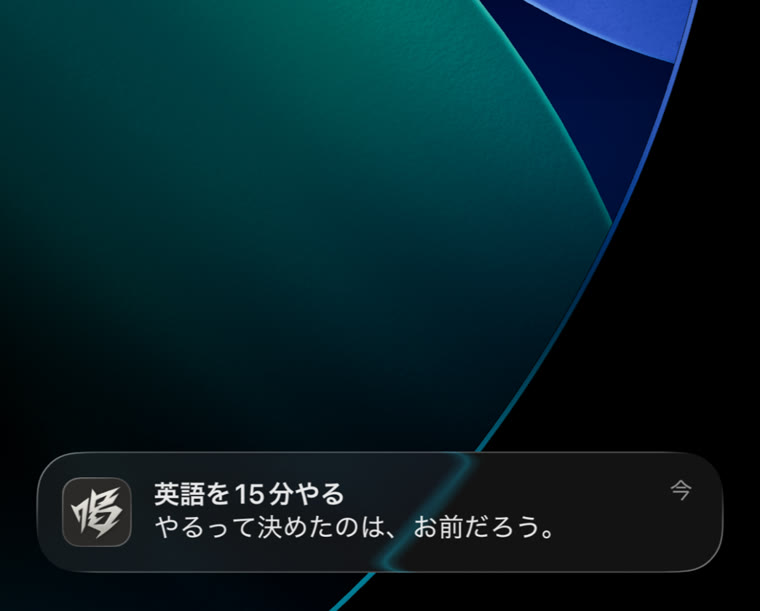
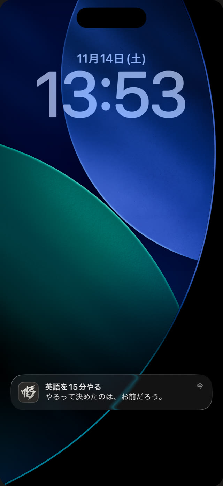
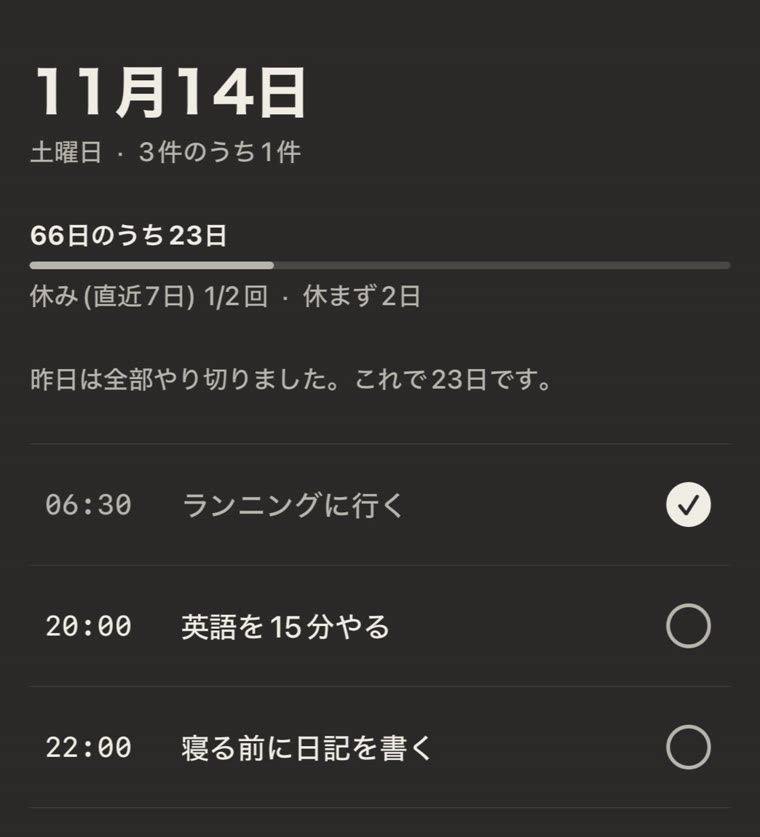
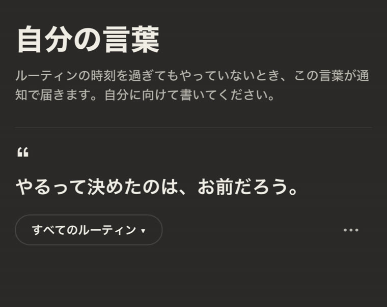
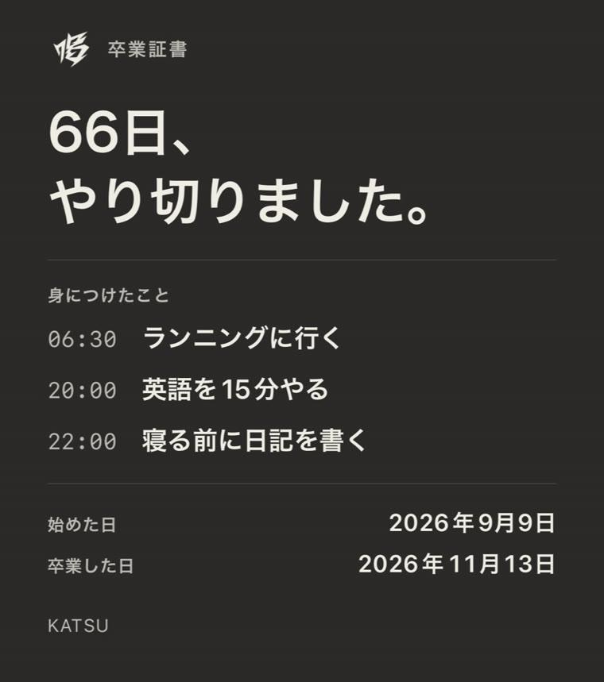

やることと時刻を決めます。時刻を過ぎてもチェックが付いていないと、言葉が届きます。
チェックは、通知やホーム画面のウィジェットからも付けられます。

アプリは一言も書きません。例文もありません。
書いた言葉は端末から出ません。送信も解析もしません。

習慣になったら、アプリを使い続ける必要はありません。
休みは直近7日で2回まで。休んでも、それまでの日数はそのままです。
66日は、ある研究で習慣になるまでの日数の中央値だった数字です(人によって大きな差があります)。

登録なしで始められます。書いた言葉を送る先のサーバーがありません。アプリを消すと、言葉も消えます。
ルーティン、チェック、通知、ウィジェット、卒業までは無料です。言葉も3つまで無料で、日替わりで届きます。有料プランでは、言葉を4つ以上持てて、ルーティンごとに違う言葉を出せます。